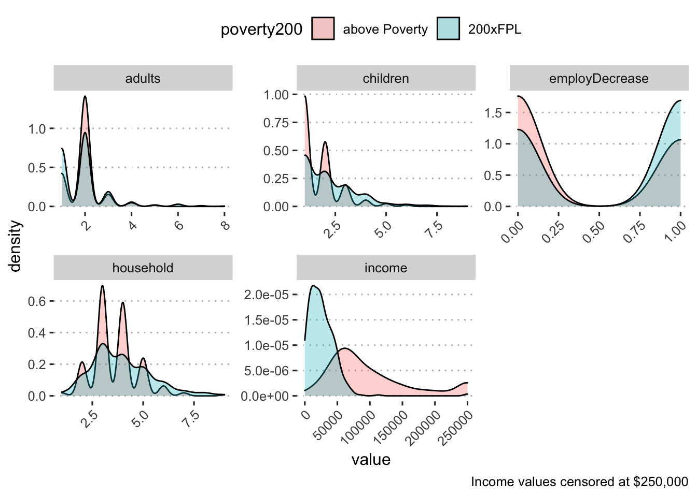

Demographics by income for Black respondents:
| variable | n | mean | sd | range |
|---|---|---|---|---|
| adults | 822 | 1.92 | 0.94 | 1.00 - 8.00 |
| children | 831 | 2.02 | 1.27 | 1.00 - 9.00 |
| employDecrease | 745 | 0.50 | 0.50 | 0.00 - 1.00 |
| household | 823 | 3.83 | 1.39 | 1.00 - 9.00 |
| income | 719 | 89,596.52 | 452,011.07 | 0.00 - 10,400,000.00 |
| variable | n | mean | sd | range |
|---|---|---|---|---|
| High Income | ||||
| adults | 372 | 1.94 | 0.73 | 1.00 - 7.00 |
| children | 375 | 1.81 | 1.07 | 1.00 - 6.00 |
| employDecrease | 357 | 0.39 | 0.49 | 0.00 - 1.00 |
| household | 373 | 3.70 | 1.20 | 1.00 - 9.00 |
| income | 376 | 147,721.86 | 614,743.63 | 0.00 - 10,400,000.00 |
| Low Income | ||||
| adults | 310 | 1.84 | 1.06 | 1.00 - 8.00 |
| children | 314 | 2.17 | 1.40 | 1.00 - 9.00 |
| employDecrease | 266 | 0.61 | 0.49 | 0.00 - 1.00 |
| household | 310 | 3.85 | 1.52 | 1.00 - 9.00 |
| income | 314 | 23,977.13 | 82,688.27 | 0.00 - 1,440,000.00 |
